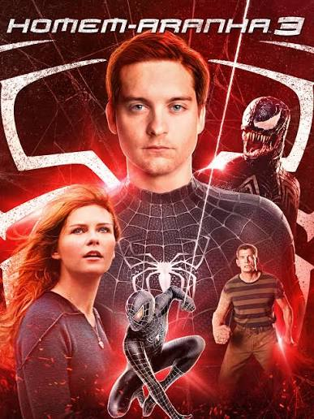
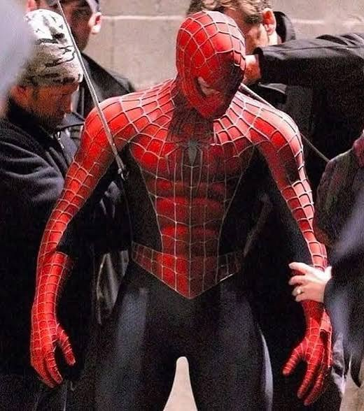
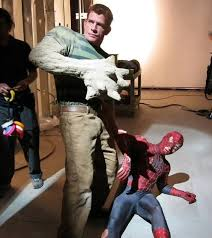
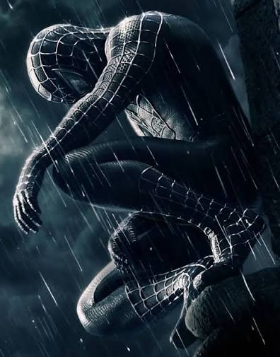

HOMEM-ARANHA 3

HISTORIA
Peter Parker (Tobey Maguire) está de volta à cidade de Nova York, onde precisa lidar com a pressão de ser um super-herói e as responsabilidades de sua vida pessoal. Quando um novo vilão, o misterioso Sandman (Thomas Haden Church), surge, Peter se vê em uma batalha épica para proteger aqueles que ama. Com a ajuda de seu amigo Harry Osborn (James Franco) e da jornalista Mary Jane Watson (Kirsten Dunst), ele enfrenta desafios que testarão sua coragem e determinação. Enquanto enfrenta o Sandman, Peter também precisa lidar com a chegada de um novo inimigo, o enigmático Venom (Topher Grace), que ameaça a cidade com sua força e habilidades sobrenaturais. Com efeitos visuais impressionantes e cenas de ação eletrizantes, "Homem-Aranha 3" é uma aventura emocionante que explora os limites do heroísmo e da amizade.


BASTIDORES
Traje descartado: A roupa preta do herói seria feita de látex brilhante, mas foi descartada porque o diretor achou que parecia uma "roupa de fetiche". Testes às cegas: Os atores do Homem-Areia e do Venom foram contratados sem saber para quais personagens estavam fazendo o teste. Explicação da dança: A infame cena de Peter Parker dançando na rua foi feita de propósito para ser vergonhosa, mostrando que o simbionte o deixava arrogante, e não "descolado". Recorde de custo: Foi o filme mais caro da história do cinema em sua época de lançamento, custando cerca de 258 milhões de dólares.


DETALHES DOS BASTIDORES
Venom forçado: O diretor não queria o vilão, mas o estúdio o obrigou a colocá-lo no roteiro. Física da areia: A equipe passou meses estudando como a areia se move para criar o Homem-Areia digital. Ação real: Muitas explosões e acrobacias foram feitas de verdade por dublês no set. Sufoco no figurino: Topher Grace (Venom) sofria com horas de maquiagem e dentes falsos desconfortáveis.
CURIOSIDADES
-
Dublê amputado: Um boxeador que nasceu sem a mão direita substituiu Tobey Maguire para simular o soco que atravessa o peito do Homem-Areia.
-
Custo astronômico: Foi um dos filmes mais caros da história do cinema na época, custando mais de 250 milhões de dólares.
-
Arrependimento: Sam Raimi ficou tão insatisfeito com o resultado final que pretendia usar o cancelado Homem-Aranha 4 para se redimir com os fãs.